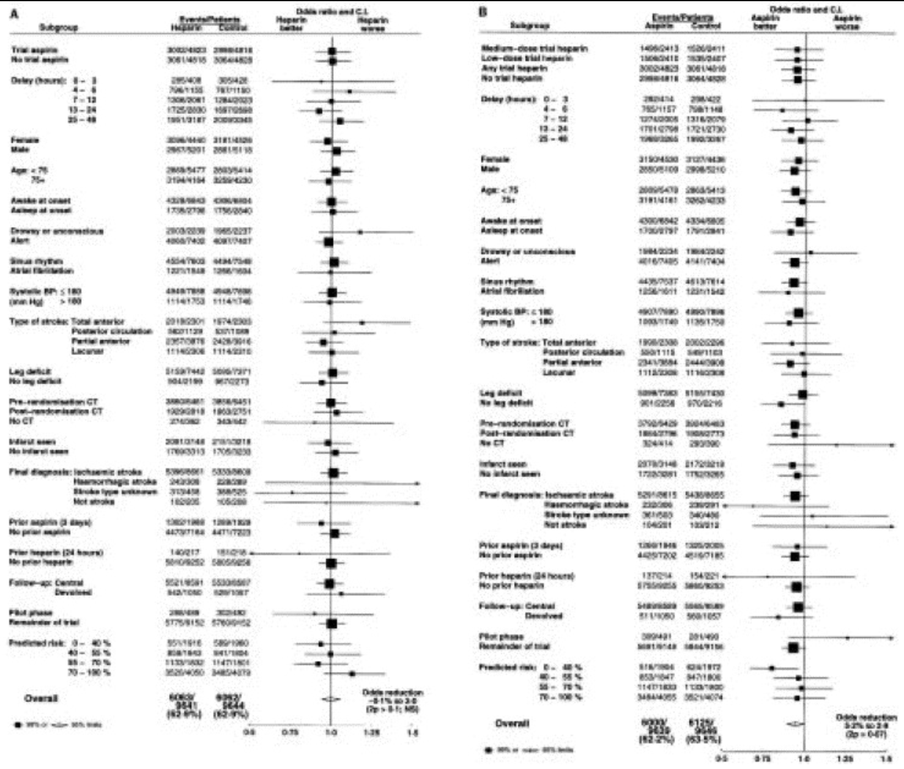

The CI of the different treatments looking at different subgroups in the data. Pay note that some of the groups are represented by a 95% CI and others has a 99% CI. The 99% CI is used for all the subgroups, while the 95% CI is for the main group. Size of square refer to the amount of available information (the sample size).

Loading libraries
library("tidyverse")
Warning: package 'tidyverse' was built under R version 4.2.3
Warning: package 'ggplot2' was built under R version 4.2.3
Warning: package 'tibble' was built under R version 4.2.3
Warning: package 'tidyr' was built under R version 4.2.3
Warning: package 'readr' was built under R version 4.2.3
Warning: package 'purrr' was built under R version 4.2.3
Warning: package 'dplyr' was built under R version 4.2.3
Warning: package 'stringr' was built under R version 4.2.3
Warning: package 'forcats' was built under R version 4.2.3
Warning: package 'lubridate' was built under R version 4.2.3
── Attaching core tidyverse packages ──────────────────────── tidyverse 2.0.0 ──
✔ dplyr 1.1.4 ✔ readr 2.1.5
✔ forcats 1.0.0 ✔ stringr 1.5.1
✔ ggplot2 3.5.1 ✔ tibble 3.2.1
✔ lubridate 1.9.3 ✔ tidyr 1.3.1
✔ purrr 1.0.2
── Conflicts ────────────────────────────────────────── tidyverse_conflicts() ──
✖ dplyr::filter() masks stats::filter()
✖ dplyr::lag() masks stats::lag()
ℹ Use the conflicted package (<http://conflicted.r-lib.org/>) to force all conflicts to become errors
Loading data
data <-read_tsv("../data/03_dat_aug.tsv")
Rows: 19435 Columns: 97
── Column specification ────────────────────────────────────────────────────────
Delimiter: "\t"
chr (69): RCONSC, SEX, RSLEEP, RATRIAL, RCT, RVISINF, RHEP24, RASP3, RDEF1, ...
dbl (27): RDELAY, AGE, RSBP, RYEAR, HOURLOCAL, MINLOCAL, DAYLOCAL, ONDRUG, D...
lgl (1): DDEAD
ℹ Use `spec()` to retrieve the full column specification for this data.
ℹ Specify the column types or set `show_col_types = FALSE` to quiet this message.
Heparin vs. Control Subgroup Analysis
Data augmentation - Creating the desired subgroups
full_labels <-c("AGE_group_>75"="Age >75", "AGE_group_≤75"="Age ≤75","DDIAG_DDIAGHA"="Final diagnosis: Haemorrhagic stroke","DDIAG_DDIAGISC"="Final diagnosis: Ischaemic stroke","DDIAG_DDIAGUN"="Final diagnosis: Indeterminate stroke","DDIAG_DNOSTRK"="Final diagnosis: Not a stroke","EXPDD_group_0-40%"="Predicted probability of death/dependence at 6 month: 0-40%","EXPDD_group_40-65%"="Predicted probability of death/dependence at 6 month: 40-65%","EXPDD_group_65-90%"="Predicted probability of death/dependence at 6 month: 65-90%","EXPDD_group_90-100%"="Predicted probability of death/dependence at 6 month: 90-100%","RASP3_N"="No aspirin within 3 days prior to randomisation","RASP3_Y"="Aspirin within 3 days prior to randomisation","RHEP24_N"="No heparin within 24 hours prior to randomisation","RHEP24_Y"="Heparin within 24 hours prior to randomisation","RATRIAL_N"="No atrial fibrillation","RATRIAL_Y"="Atrial fibrillation","RCONSC_D"="Drowsy state at randomisation","RCONSC_F"="Fully alert at randomisation","RCONSC_U"="Unconcious at randomisation","RCT_N"="No CT before randomisation","RCT_Y"="CT before randomisation","RDEF3_N"="No leg/foot deficit","RDEF3_Y"="Leg/foot deficit","RDELAY_group_0-8h"="0-8 hour delay between stroke and randomisation","RDELAY_group_9-12h"="9-12 hour delay between stroke and randomisation","RDELAY_group_13-24h"="13-24 hour delay between stroke and randomisation","RDELAY_group_25-48h"="25-48 hour delay between stroke and randomisation","RSBP_group_≤180"="Systolic blood pressure under 180mmHg at randomisation","RSBP_group_>180"="Systolic blood pressure over 180mmHg at randomisation","RSLEEP_N"="Symptoms appearing while awake","RSLEEP_Y"="Symptoms appearing while asleep","RVISINF_N"="No infarct visible on CT","RVISINF_Y"="Infarct visible on CT","RXASP_N"="No trial aspirin allocated","RXASP_Y"="Trial aspirin allocated","SEX_F"="Female","SEX_M"="Male","STYPE_LACS"="Stroke subtype: Lacunar syndrome","STYPE_PACS"="Stroke subtype: Partial anterior circulation syndrome","STYPE_POCS"="Stroke subtype: Posterior circulation syndrome","STYPE_TACS"="Stroke subtype: Total anterior circulation syndrome","STYPE_OTH"="Stroke subtype: Other")
The plot is created similarly to the figure 2 in the data
p1 <- data_CI |>ggplot(aes(x = Ad_ben,y = group_name,xmin = CI_lower,xmax = CI_upper))+geom_point(aes(size = Total_patients),shape =15)+geom_errorbarh(color ="blue")+geom_vline(xintercept =0, color ="grey", linetype =2)+scale_y_discrete(labels = full_labels)+scale_size_continuous(range =c(1,3))+labs(x ="Reductions in odds of being dead or dependent at six months for heparin versus no heparin",size ="Group size (in 1000 patients)")+theme_minimal()+theme(axis.title.y =element_blank(),legend.position ="bottom")p1